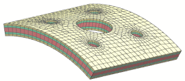

Fill laminate
Use the Fill Laminate command to create 3D ply meshes between a set of 2D dependent meshes. The global layup must be defined on the master mesh of the 2D dependent meshes.
|
|
 |

The 3D elements fill the void between the set of 2D dependent meshes, following the paths that are defined by the nodes on the 2D meshes. NX computes the thickness of each layer by taking into account the thickness of the plies of the global layup and the distance between the set of 2D dependent meshes.